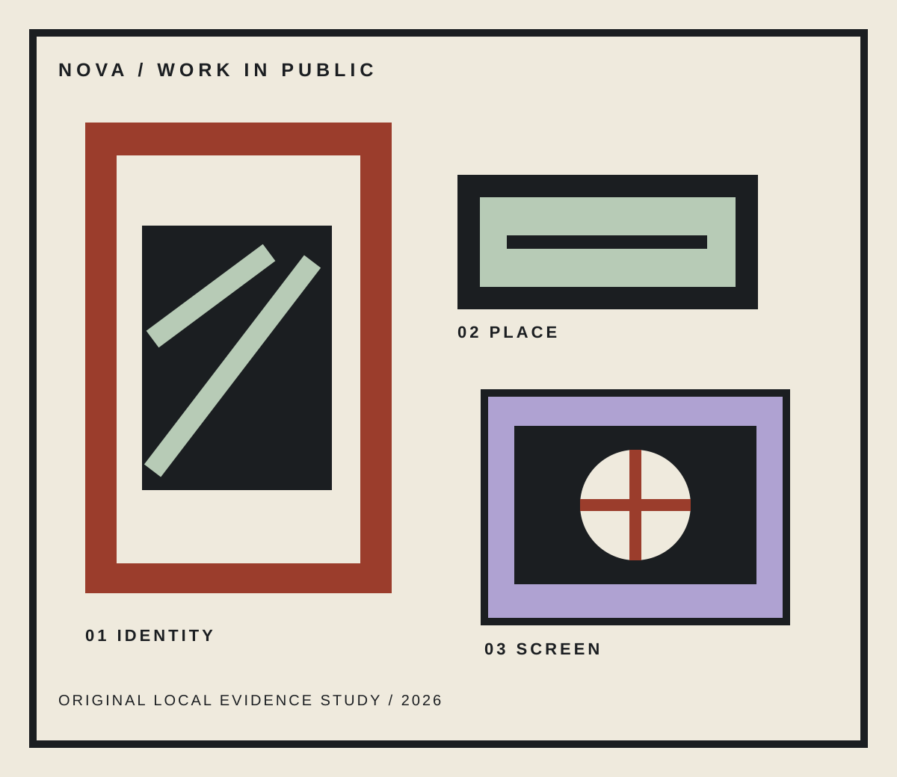

01 / COMMON MATTER
Independent studio / identity / environments / digital
Make the work land in the world.
NOVA turns a useful point of view into things people can carry, enter, share, and return to. We make the claim visible before the explanation begins.
See the proof
An idea earns belief when it changes a surface.
We look for the material consequence inside a brief, then give it a coherent language across the public places, physical objects, and digital moments where it will actually be met.
Proof, not portfolio filler.
Three delivery modes / one point of view
02 / LOUDHOUSE
A cultural venue with a sign worth following.
03 / AFTERLIGHT
An invitation that keeps the night moving after the first click.
Find the thing that has to become real.
01Locate the material consequence
What changes when this belief reaches a wall, a room, or a screen?
02Build the proof into the language
Type, color, crop, and copy share one visible job.
03Give each surface a reason
Every artifact carries the idea without borrowing a generic card.
04Send the work into use
The system holds from a first glance to a repeated encounter.
Bring the unfinished thing.
A question, a place, a launch, or a point of view worth making public.